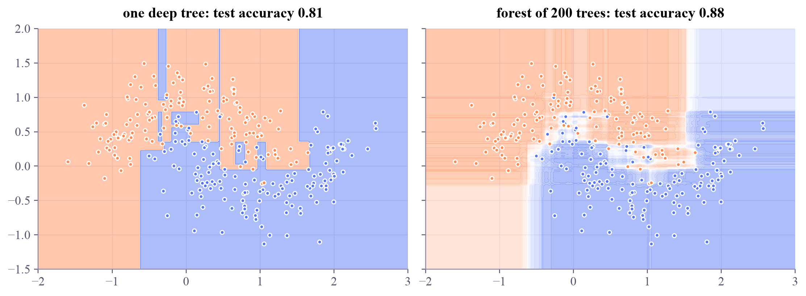

Machine Learning
 about 7 min
about 7 min ml-w3d5.ipynb
ml-w3d5.ipynb
Forests: many trees vote
One deep tree overfits. Many trees, each grown on a random resample of the data, vote their way to a smoother and more reliable answer.
In this lesson you will
- Explain bagging: bootstrap resamples, random features, and a vote
- See why averaging many overfitting trees reduces variance
- Use out-of-bag scores, and know what boosting does differently
Warm-up
1 minThe wisdom of crowds

This lesson is a short one. Ask one friend to guess the number of sweets in a jar and they'll be off. Ask a hundred and average their guesses: the errors cancel and the average is surprisingly close. A random forest does exactly that with trees.
Big idea
2 minBagging, in three moves
- Resample. Each tree gets its own bootstrap sample: draw examples from the training examples with replacement. Some appear twice, about a third are left out.
- Randomize. At each split, the tree may only choose among a random subset of the features. That makes the trees more different from each other.
- Vote. Every tree classifies; the forest averages the votes.
Each deep tree overfits, but each overfits differently. Averaging cancels much of that: it lowers the variance from week 2's bias–variance trade-off, without adding bias. And the left-out third of each tree's sample gives a free validation score, the out-of-bag accuracy.
Boosting combines trees the other way round: small trees grown one after another, each one correcting the mistakes of the trees before it.
Play
2 minGrow a forest
Filled dots train the forest; rings are test points. Add trees and watch the boundary smooth out, then look at a single tree on its own.
Code
1 minForests in scikit-learn
The notebook for this lessonEvery code cell below, with what it printed, is in
ml-w3d5.ipynb. To change the code and run it yourself, open the notebook in Google Colab (free, in your browser) or download it for your own Jupyter.import numpy as np
import matplotlib.pyplot as plt
from sklearn.datasets import make_moons
from sklearn.model_selection import train_test_split
from sklearn.tree import DecisionTreeClassifier
from sklearn.ensemble import RandomForestClassifier
from matplotlib.colors import LinearSegmentedColormap
X, y = make_moons(n_samples=400, noise=0.3, random_state=3)
X_train, X_test, y_train, y_test = train_test_split(X, y, test_size=0.3, random_state=0)
apricot_blue = LinearSegmentedColormap.from_list("apricot_blue", ["#ff8a50", "#ffffff", "#5577f5"])
models = {
"one deep tree": DecisionTreeClassifier(random_state=0),
"forest of 200 trees": RandomForestClassifier(n_estimators=200, random_state=0),
}
xx, yy = np.meshgrid(np.linspace(-2, 3, 250), np.linspace(-1.5, 2, 200))
fig, axes = plt.subplots(1, 2, figsize=(10, 3.6), sharey=True, layout="constrained")
for ax, (name, model) in zip(axes, models.items()):
model.fit(X_train, y_train)
p = model.predict_proba(np.c_[xx.ravel(), yy.ravel()])[:, 1].reshape(xx.shape)
ax.contourf(xx, yy, p, levels=20, cmap=apricot_blue, alpha=0.5)
ax.scatter(X_train[:, 0], X_train[:, 1], c=np.where(y_train == 0, "#ff8a50", "#5577f5"), s=12)
ax.set_title(f"{name}: test accuracy {model.score(X_test, y_test):.2f}")
plt.show()What it printed in the notebook
rf = RandomForestClassifier(n_estimators=200, oob_score=True, random_state=0).fit(X_train, y_train)
print(f"out-of-bag accuracy: {rf.oob_score_:.3f}")
print(f"test accuracy: {rf.score(X_test, y_test):.3f}")What it printed in the notebook
out-of-bag accuracy: 0.900 test accuracy: 0.875
from sklearn.ensemble import GradientBoostingClassifier
gb = GradientBoostingClassifier(n_estimators=200, max_depth=2, learning_rate=0.1, random_state=0).fit(X_train, y_train)
print(f"gradient boosting test accuracy: {gb.score(X_test, y_test):.3f}")What it printed in the notebook
gradient boosting test accuracy: 0.842
Your turn
optionalYour turn (if you have energy left): how many trees?
Train forests of 1 to 300 trees and print their test accuracy. Where does it level off?
for n in [1, 3, 10, 30, 100, 300]:
acc = None # TODO: fit RandomForestClassifier(n_estimators=n, random_state=0) and score it on the test set
print(f"{n:3d} trees: test accuracy {acc}")Show a solution
for n in [1, 3, 10, 30, 100, 300]:
acc = RandomForestClassifier(n_estimators=n, random_state=0).fit(X_train, y_train).score(X_test, y_test)
print(f"{n:3d} trees: test accuracy {acc:.3f}")
print("Accuracy climbs quickly, then levels off: adding trees doesn't make a forest overfit, it just costs more time.")What it printed in the notebook
1 trees: test accuracy 0.808 3 trees: test accuracy 0.842 10 trees: test accuracy 0.842 30 trees: test accuracy 0.858 100 trees: test accuracy 0.858 300 trees: test accuracy 0.867 Accuracy climbs quickly, then levels off: adding trees doesn't make a forest overfit, it just costs more time.
Check yourself
1 minQuick check
Question 1 of 2
Why does a random forest usually beat one very deep tree on new data?
Question 2 of 2
What is a bootstrap sample of 100 examples?
Wrap-up
1 minThis week in one sentence
That's week 3 of Machine Learning! Saturday has an optional flashback. Next week: kernels, the idea quantum machine learning builds on.
That's the lesson!
Tap the button to save it. Short and steady wins.
Marked by mistake? Undo